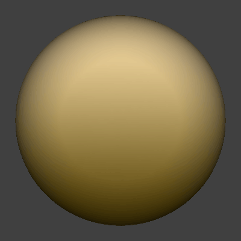
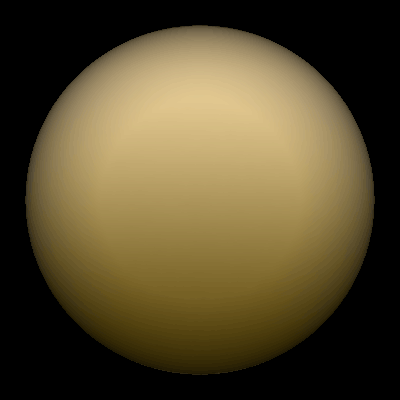
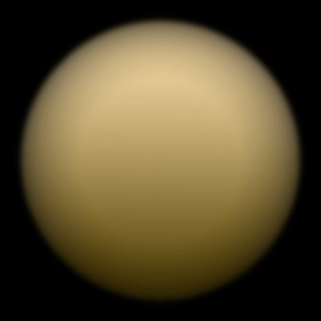
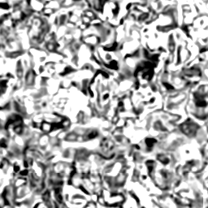
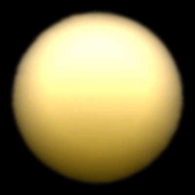
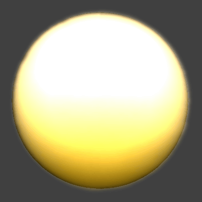
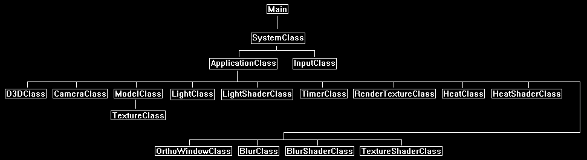

In this tutorial we will cover how to implement a heat shader using DirectX 11, C++, and HLSL.
The code in this tutorial will be built on the code and knowledge from the glow mapping tutorial 46 and the fire tutorial 33.
To create a heat effect, we will use a combination of 2D post processing techniques we have already discussed.
First, we will apply a glow to the area we want the heat effect to operate on.
And after that we will use distortion to create a heat shimmering effect.
Let's look at the exact steps with an example.
First, we will render our 3D scene to a texture.
Here we will be rendering a yellow textured 3D sphere.

Next, we will render out a heat map.
This is the section of the scene we want to apply the heat effect to.
This works the same as the glow map did in the glow tutorial.
For this tutorial I will render out the entire sphere since I want to do the heat effect on the entire scene.
But do note you can just render a black and white result and color it differently.
Or you render out just a couple objects that you want heat on.

The next step we perform a regular blur on the rendered-out heat map.

Now that we have our heat map, we will also need our noise texture for the distortion part of the effect.
A plasma like texture is usually used to most closely resemble how moving heat looks.
For this tutorial we will use the following noise texture:

With our heat map and our noise texture we will combine them in the HLSL shader to produce a shimmering and moving heat effect.
We will use the frame time and multiple scrolling UV coordinates to simulate the movement of heat in an upwards direction similar to the fire rendering tutorial.
With this controlled distortion effect, we will have an animated heat map that now looks like the following:

To complete the heat effect, I will simply add the final distorted heat map back on top of the regular scene to give a very strong heat effect that also intensifies all of the colors.
There are also other options such as modifying the final scene using the heat map and a lerp function.
But it is up to you how to use the distorted heat map to complete your scene with a heat effect.

Framework
For the framework we have all the classes we need to render out the sphere with a regular light shader.
We also have all the classes to perform a blur.
For new classes we have the HeatClass and the HeatShaderClass.

We will start the code section of the tutorial by looking at the HLSL heat shader.
Heat.vs
The heat vertex shader is exactly the same as the fire vertex shader.
It works by using the frame time, scroll speeds, and scales to take the input texture coordinates and create three different scrolling and scaled output texture coordinates for the pixel shader.
////////////////////////////////////////////////////////////////////////////////
// Filename: heat.vs
////////////////////////////////////////////////////////////////////////////////
/////////////
// GLOBALS //
/////////////
cbuffer MatrixBuffer
{
matrix worldMatrix;
matrix viewMatrix;
matrix projectionMatrix;
};
cbuffer NoiseBuffer
{
float frameTime;
float3 scrollSpeeds;
float3 scales;
float padding;
};
//////////////
// TYPEDEFS //
//////////////
struct VertexInputType
{
float4 position : POSITION;
float2 tex : TEXCOORD0;
};
struct PixelInputType
{
float4 position : SV_POSITION;
float2 tex : TEXCOORD0;
float2 texCoords1 : TEXCOORD1;
float2 texCoords2 : TEXCOORD2;
float2 texCoords3 : TEXCOORD3;
};
////////////////////////////////////////////////////////////////////////////////
// Vertex Shader
////////////////////////////////////////////////////////////////////////////////
PixelInputType HeatVertexShader(VertexInputType input)
{
PixelInputType output;
// Change the position vector to be 4 units for proper matrix calculations.
input.position.w = 1.0f;
// Calculate the position of the vertex against the world, view, and projection matrices.
output.position = mul(input.position, worldMatrix);
output.position = mul(output.position, viewMatrix);
output.position = mul(output.position, projectionMatrix);
// Store the texture coordinates for the pixel shader.
output.tex = input.tex;
// Compute texture coordinates for first noise texture using the first scale and upward scrolling speed values.
output.texCoords1 = (input.tex * scales.x);
output.texCoords1.y = output.texCoords1.y + (frameTime * scrollSpeeds.x);
// Compute texture coordinates for second noise texture using the second scale and upward scrolling speed values.
output.texCoords2 = (input.tex * scales.y);
output.texCoords2.y = output.texCoords2.y + (frameTime * scrollSpeeds.y);
// Compute texture coordinates for third noise texture using the third scale and upward scrolling speed values.
output.texCoords3 = (input.tex * scales.z);
output.texCoords3.y = output.texCoords3.y + (frameTime * scrollSpeeds.z);
return output;
}
Heat.ps
////////////////////////////////////////////////////////////////////////////////
// Filename: heat.ps
////////////////////////////////////////////////////////////////////////////////
/////////////
// GLOBALS //
/////////////
We have three textures as input. The color texture, the glow texture (which is our blurred heat map), and the noise texture.
Texture2D colorTexture : register(t0);
Texture2D glowTexture : register(t1);
Texture2D noiseTexture : register(t2);
SamplerState SampleTypeClamp : register(s0);
SamplerState SampleTypeWrap : register(s1);
//////////////////////
// CONSTANT BUFFERS //
//////////////////////
This is the glow buffer that controls how strong the emissive glow is.
cbuffer GlowBuffer
{
float emissiveMultiplier;
float3 padding;
};
This is our regular noise distortion buffer.
cbuffer DistortionBuffer
{
float2 distortion1;
float2 distortion2;
float2 distortion3;
float distortionScale;
float distortionBias;
};
//////////////
// TYPEDEFS //
//////////////
Here we have our three differently scaled texture coordinates that come as input from the vertex shader.
struct PixelInputType
{
float4 position : SV_POSITION;
float2 tex : TEXCOORD0;
float2 texCoords1 : TEXCOORD1;
float2 texCoords2 : TEXCOORD2;
float2 texCoords3 : TEXCOORD3;
};
////////////////////////////////////////////////////////////////////////////////
// Pixel Shader
////////////////////////////////////////////////////////////////////////////////
float4 HeatPixelShader(PixelInputType input) : SV_TARGET
{
float4 noise1, noise2, noise3;
float4 finalNoise;
float heatOffsetBias;
float2 heatOffset;
float4 glowMap;
float4 textureColor;
float4 color;
Begin the shader by using the same code from the fire shader where we sample the same noise texture with three different coordinates.
We then apply the distortion values and create a final noise result.
// Sample the same noise texture using the three different texture coordinates to get three different noise scales.
noise1 = noiseTexture.Sample(SampleTypeWrap, input.texCoords1);
noise2 = noiseTexture.Sample(SampleTypeWrap, input.texCoords2);
noise3 = noiseTexture.Sample(SampleTypeWrap, input.texCoords3);
// Move the noise from the (0, 1) range to the (-1, +1) range.
noise1 = (noise1 - 0.5f) * 2.0f;
noise2 = (noise2 - 0.5f) * 2.0f;
noise3 = (noise3 - 0.5f) * 2.0f;
// Distort the three noise x and y coordinates by the three different distortion x and y values.
noise1.xy = noise1.xy * distortion1.xy;
noise2.xy = noise2.xy * distortion2.xy;
noise3.xy = noise3.xy * distortion3.xy;
// Combine all three distorted noise results into a single noise result.
finalNoise = noise1 + noise2 + noise3;
We will now set our heat bias and then calculate the offset coordinates for sampling the heat texture using the distorted noise coordinates we just calculated above.
// Set the heat offset bias to modify the heat distortion to be less crazy.
heatOffsetBias = 0.001f;
// Create the heat offset texture coords for sampling to create the heat shimmer effect.
heatOffset = ((finalNoise * 2.0f) - 1.0f) * heatOffsetBias;
With the distorted coordinates we then sample the blurred heat texture (glowMap) and we have our heat shimmering effect.
// Sample the glow texture using the heat offset for texture coords.
glowMap = glowTexture.Sample(SampleTypeClamp, input.tex + heatOffset);
Sample the color texture and then combine the texture color and the distorted heat texture using the emissive multiplier to control the strength of the heat shimmering effect.
// Sample the pixel color from the texture using the sampler at this texture coordinate location.
textureColor = colorTexture.Sample(SampleTypeClamp, input.tex);
// Add the texture color to the glow color multiplied by the glow stength.
color = saturate(textureColor + (glowMap * emissiveMultiplier));
return color;
}
Heatshaderclass.h
The heat shader class will contain elements from both the fire shader and glow shader classes.
////////////////////////////////////////////////////////////////////////////////
// Filename: heatshaderclass.h
////////////////////////////////////////////////////////////////////////////////
#ifndef _HEATSHADERCLASS_H_
#define _HEATSHADERCLASS_H_
//////////////
// INCLUDES //
//////////////
#include <d3d11.h>
#include <d3dcompiler.h>
#include <directxmath.h>
#include <fstream>
using namespace DirectX;
using namespace std;
////////////////////////////////////////////////////////////////////////////////
// Class name: HeatShaderClass
////////////////////////////////////////////////////////////////////////////////
class HeatShaderClass
{
private:
struct MatrixBufferType
{
XMMATRIX world;
XMMATRIX view;
XMMATRIX projection;
};
This is the struct from the glow shader.
struct GlowBufferType
{
float emissiveMultiplier;
XMFLOAT3 padding;
};
The NoiseBufferType and DistortionBufferType are from the glow shader class.
struct NoiseBufferType
{
float frameTime;
XMFLOAT3 scrollSpeeds;
XMFLOAT3 scales;
float padding;
};
struct DistortionBufferType
{
XMFLOAT2 distortion1;
XMFLOAT2 distortion2;
XMFLOAT2 distortion3;
float distortionScale;
float distortionBias;
};
public:
HeatShaderClass();
HeatShaderClass(const HeatShaderClass&);
~HeatShaderClass();
bool Initialize(ID3D11Device*, HWND);
void Shutdown();
bool Render(ID3D11DeviceContext*, int, XMMATRIX, XMMATRIX, XMMATRIX, ID3D11ShaderResourceView*, ID3D11ShaderResourceView*,
float, float, XMFLOAT3, XMFLOAT3, XMFLOAT2, XMFLOAT2, XMFLOAT2, float, float, ID3D11ShaderResourceView*);
private:
bool InitializeShader(ID3D11Device*, HWND, WCHAR*, WCHAR*);
void ShutdownShader();
void OutputShaderErrorMessage(ID3D10Blob*, HWND, WCHAR*);
bool SetShaderParameters(ID3D11DeviceContext*, XMMATRIX, XMMATRIX, XMMATRIX, ID3D11ShaderResourceView*, ID3D11ShaderResourceView*,
float, float, XMFLOAT3, XMFLOAT3, XMFLOAT2, XMFLOAT2, XMFLOAT2, float, float, ID3D11ShaderResourceView*);
void RenderShader(ID3D11DeviceContext*, int);
private:
ID3D11VertexShader* m_vertexShader;
ID3D11PixelShader* m_pixelShader;
ID3D11InputLayout* m_layout;
ID3D11Buffer* m_matrixBuffer;
We will require a glow, noise, and distortion buffer.
We also need two different clamp types for the pixel shader.
ID3D11Buffer* m_glowBuffer;
ID3D11SamplerState* m_sampleStateClamp;
ID3D11SamplerState* m_sampleStateWrap;
ID3D11Buffer* m_noiseBuffer;
ID3D11Buffer* m_distortionBuffer;
};
#endif
Heatshaderclass.cpp
////////////////////////////////////////////////////////////////////////////////
// Filename: heatshaderclass.cpp
////////////////////////////////////////////////////////////////////////////////
#include "heatshaderclass.h"
HeatShaderClass::HeatShaderClass()
{
m_vertexShader = 0;
m_pixelShader = 0;
m_layout = 0;
m_matrixBuffer = 0;
m_glowBuffer = 0;
m_sampleStateClamp = 0;
m_sampleStateWrap = 0;
m_noiseBuffer = 0;
m_distortionBuffer = 0;
}
HeatShaderClass::HeatShaderClass(const HeatShaderClass& other)
{
}
HeatShaderClass::~HeatShaderClass()
{
}
bool HeatShaderClass::Initialize(ID3D11Device* device, HWND hwnd)
{
wchar_t vsFilename[128], psFilename[128];
int error;
bool result;
We load the heat.vs and heat.ps HLSL shader files here.
// Set the filename of the vertex shader.
error = wcscpy_s(vsFilename, 128, L"../Engine/heat.vs");
if(error != 0)
{
return false;
}
// Set the filename of the pixel shader.
error = wcscpy_s(psFilename, 128, L"../Engine/heat.ps");
if(error != 0)
{
return false;
}
// Initialize the vertex and pixel shaders.
result = InitializeShader(device, hwnd, vsFilename, psFilename);
if(!result)
{
return false;
}
return true;
}
void HeatShaderClass::Shutdown()
{
// Shutdown the vertex and pixel shaders as well as the related objects.
ShutdownShader();
return;
}
The Render function will use all the textures, noise variables, and glow variables to create the heat effect.
bool HeatShaderClass::Render(ID3D11DeviceContext* deviceContext, int indexCount, XMMATRIX worldMatrix, XMMATRIX viewMatrix, XMMATRIX projectionMatrix, ID3D11ShaderResourceView* texture,
ID3D11ShaderResourceView* glowTexture, float emissiveMultiplier, float frameTime, XMFLOAT3 scrollSpeeds, XMFLOAT3 scales,
XMFLOAT2 distortion1, XMFLOAT2 distortion2, XMFLOAT2 distortion3, float distortionScale, float distortionBias, ID3D11ShaderResourceView* noiseTexture)
{
bool result;
// Set the shader parameters that it will use for rendering.
result = SetShaderParameters(deviceContext, worldMatrix, viewMatrix, projectionMatrix, texture, glowTexture, emissiveMultiplier, frameTime, scrollSpeeds, scales,
distortion1, distortion2, distortion3, distortionScale, distortionBias, noiseTexture);
if(!result)
{
return false;
}
// Now render the prepared buffers with the shader.
RenderShader(deviceContext, indexCount);
return true;
}
bool HeatShaderClass::InitializeShader(ID3D11Device* device, HWND hwnd, WCHAR* vsFilename, WCHAR* psFilename)
{
HRESULT result;
ID3D10Blob* errorMessage;
ID3D10Blob* vertexShaderBuffer;
ID3D10Blob* pixelShaderBuffer;
D3D11_INPUT_ELEMENT_DESC polygonLayout[2];
unsigned int numElements;
D3D11_BUFFER_DESC matrixBufferDesc;
D3D11_BUFFER_DESC glowBufferDesc;
D3D11_SAMPLER_DESC samplerDesc;
D3D11_BUFFER_DESC noiseBufferDesc;
D3D11_BUFFER_DESC distortionBufferDesc;
// Initialize the pointers this function will use to null.
errorMessage = 0;
vertexShaderBuffer = 0;
pixelShaderBuffer = 0;
Load the heat vertex shader.
// Compile the vertex shader code.
result = D3DCompileFromFile(vsFilename, NULL, NULL, "HeatVertexShader", "vs_5_0", D3D10_SHADER_ENABLE_STRICTNESS, 0, &vertexShaderBuffer, &errorMessage);
if(FAILED(result))
{
// If the shader failed to compile it should have writen something to the error message.
if(errorMessage)
{
OutputShaderErrorMessage(errorMessage, hwnd, vsFilename);
}
// If there was nothing in the error message then it simply could not find the shader file itself.
else
{
MessageBox(hwnd, vsFilename, L"Missing Shader File", MB_OK);
}
return false;
}
Load the heat pixel shader.
// Compile the pixel shader code.
result = D3DCompileFromFile(psFilename, NULL, NULL, "HeatPixelShader", "ps_5_0", D3D10_SHADER_ENABLE_STRICTNESS, 0, &pixelShaderBuffer, &errorMessage);
if(FAILED(result))
{
// If the shader failed to compile it should have writen something to the error message.
if(errorMessage)
{
OutputShaderErrorMessage(errorMessage, hwnd, psFilename);
}
// If there was nothing in the error message then it simply could not find the file itself.
else
{
MessageBox(hwnd, psFilename, L"Missing Shader File", MB_OK);
}
return false;
}
// Create the vertex shader from the buffer.
result = device->CreateVertexShader(vertexShaderBuffer->GetBufferPointer(), vertexShaderBuffer->GetBufferSize(), NULL, &m_vertexShader);
if(FAILED(result))
{
return false;
}
// Create the pixel shader from the buffer.
result = device->CreatePixelShader(pixelShaderBuffer->GetBufferPointer(), pixelShaderBuffer->GetBufferSize(), NULL, &m_pixelShader);
if(FAILED(result))
{
return false;
}
// Create the vertex input layout description.
polygonLayout[0].SemanticName = "POSITION";
polygonLayout[0].SemanticIndex = 0;
polygonLayout[0].Format = DXGI_FORMAT_R32G32B32_FLOAT;
polygonLayout[0].InputSlot = 0;
polygonLayout[0].AlignedByteOffset = 0;
polygonLayout[0].InputSlotClass = D3D11_INPUT_PER_VERTEX_DATA;
polygonLayout[0].InstanceDataStepRate = 0;
polygonLayout[1].SemanticName = "TEXCOORD";
polygonLayout[1].SemanticIndex = 0;
polygonLayout[1].Format = DXGI_FORMAT_R32G32_FLOAT;
polygonLayout[1].InputSlot = 0;
polygonLayout[1].AlignedByteOffset = D3D11_APPEND_ALIGNED_ELEMENT;
polygonLayout[1].InputSlotClass = D3D11_INPUT_PER_VERTEX_DATA;
polygonLayout[1].InstanceDataStepRate = 0;
// Get a count of the elements in the layout.
numElements = sizeof(polygonLayout) / sizeof(polygonLayout[0]);
// Create the vertex input layout.
result = device->CreateInputLayout(polygonLayout, numElements, vertexShaderBuffer->GetBufferPointer(), vertexShaderBuffer->GetBufferSize(), &m_layout);
if(FAILED(result))
{
return false;
}
// Release the vertex shader buffer and pixel shader buffer since they are no longer needed.
vertexShaderBuffer->Release();
vertexShaderBuffer = 0;
pixelShaderBuffer->Release();
pixelShaderBuffer = 0;
Setup the matrix buffer.
// Setup the description of the dynamic constant buffer that is in the vertex shader.
matrixBufferDesc.Usage = D3D11_USAGE_DYNAMIC;
matrixBufferDesc.ByteWidth = sizeof(MatrixBufferType);
matrixBufferDesc.BindFlags = D3D11_BIND_CONSTANT_BUFFER;
matrixBufferDesc.CPUAccessFlags = D3D11_CPU_ACCESS_WRITE;
matrixBufferDesc.MiscFlags = 0;
matrixBufferDesc.StructureByteStride = 0;
// Create the constant buffer pointer so we can access the vertex shader constant buffer from within this class.
result = device->CreateBuffer(&matrixBufferDesc, NULL, &m_matrixBuffer);
if(FAILED(result))
{
return false;
}
Setup the glow buffer.
// Setup the description of the dynamic glow constant buffer that is in the pixel shader.
glowBufferDesc.Usage = D3D11_USAGE_DYNAMIC;
glowBufferDesc.ByteWidth = sizeof(GlowBufferType);
glowBufferDesc.BindFlags = D3D11_BIND_CONSTANT_BUFFER;
glowBufferDesc.CPUAccessFlags = D3D11_CPU_ACCESS_WRITE;
glowBufferDesc.MiscFlags = 0;
glowBufferDesc.StructureByteStride = 0;
// Create the constant buffer pointer so we can access the pixel shader constant buffer from within this class.
result = device->CreateBuffer(&glowBufferDesc, NULL, &m_glowBuffer);
if(FAILED(result))
{
return false;
}
Setup the two samplers.
// Create a texture sampler state description.
samplerDesc.Filter = D3D11_FILTER_MIN_MAG_MIP_LINEAR;
samplerDesc.AddressU = D3D11_TEXTURE_ADDRESS_CLAMP;
samplerDesc.AddressV = D3D11_TEXTURE_ADDRESS_CLAMP;
samplerDesc.AddressW = D3D11_TEXTURE_ADDRESS_CLAMP;
samplerDesc.MipLODBias = 0.0f;
samplerDesc.MaxAnisotropy = 1;
samplerDesc.ComparisonFunc = D3D11_COMPARISON_ALWAYS;
samplerDesc.BorderColor[0] = 0;
samplerDesc.BorderColor[1] = 0;
samplerDesc.BorderColor[2] = 0;
samplerDesc.BorderColor[3] = 0;
samplerDesc.MinLOD = 0;
samplerDesc.MaxLOD = D3D11_FLOAT32_MAX;
// Create the texture sampler state.
result = device->CreateSamplerState(&samplerDesc, &m_sampleStateClamp);
if(FAILED(result))
{
return false;
}
// Create a texture sampler state description.
samplerDesc.Filter = D3D11_FILTER_MIN_MAG_MIP_LINEAR;
samplerDesc.AddressU = D3D11_TEXTURE_ADDRESS_WRAP;
samplerDesc.AddressV = D3D11_TEXTURE_ADDRESS_WRAP;
samplerDesc.AddressW = D3D11_TEXTURE_ADDRESS_WRAP;
samplerDesc.MipLODBias = 0.0f;
samplerDesc.MaxAnisotropy = 1;
samplerDesc.ComparisonFunc = D3D11_COMPARISON_ALWAYS;
samplerDesc.BorderColor[0] = 0;
samplerDesc.BorderColor[1] = 0;
samplerDesc.BorderColor[2] = 0;
samplerDesc.BorderColor[3] = 0;
samplerDesc.MinLOD = 0;
samplerDesc.MaxLOD = D3D11_FLOAT32_MAX;
// Create the texture sampler state.
result = device->CreateSamplerState(&samplerDesc, &m_sampleStateWrap);
if(FAILED(result))
{
return false;
}
Setup the noise buffer.
// Setup the description of the camera dynamic constant buffer that is in the vertex shader.
noiseBufferDesc.Usage = D3D11_USAGE_DYNAMIC;
noiseBufferDesc.ByteWidth = sizeof(NoiseBufferType);
noiseBufferDesc.BindFlags = D3D11_BIND_CONSTANT_BUFFER;
noiseBufferDesc.CPUAccessFlags = D3D11_CPU_ACCESS_WRITE;
noiseBufferDesc.MiscFlags = 0;
noiseBufferDesc.StructureByteStride = 0;
// Create the constant buffer pointer so we can access the vertex shader constant buffer from within this class.
result = device->CreateBuffer(&noiseBufferDesc, NULL, &m_noiseBuffer);
if(FAILED(result))
{
return false;
}
Setup the distortion buffer.
// Setup the description of the distortion dynamic constant buffer that is in the pixel shader.
distortionBufferDesc.Usage = D3D11_USAGE_DYNAMIC;
distortionBufferDesc.ByteWidth = sizeof(DistortionBufferType);
distortionBufferDesc.BindFlags = D3D11_BIND_CONSTANT_BUFFER;
distortionBufferDesc.CPUAccessFlags = D3D11_CPU_ACCESS_WRITE;
distortionBufferDesc.MiscFlags = 0;
distortionBufferDesc.StructureByteStride = 0;
// Create the constant buffer pointer so we can access the pixel shader constant buffer from within this class.
result = device->CreateBuffer(&distortionBufferDesc, NULL, &m_distortionBuffer);
if(FAILED(result))
{
return false;
}
return true;
}
void HeatShaderClass::ShutdownShader()
{
// Release the distortion constant buffer.
if(m_distortionBuffer)
{
m_distortionBuffer->Release();
m_distortionBuffer = 0;
}
// Release the noise constant buffer.
if(m_noiseBuffer)
{
m_noiseBuffer->Release();
m_noiseBuffer = 0;
}
// Release the sampler states.
if(m_sampleStateClamp)
{
m_sampleStateClamp->Release();
m_sampleStateClamp = 0;
}
if(m_sampleStateWrap)
{
m_sampleStateWrap->Release();
m_sampleStateWrap = 0;
}
// Release the glow constant buffer.
if(m_glowBuffer)
{
m_glowBuffer->Release();
m_glowBuffer = 0;
}
// Release the matrix constant buffer.
if(m_matrixBuffer)
{
m_matrixBuffer->Release();
m_matrixBuffer = 0;
}
// Release the layout.
if(m_layout)
{
m_layout->Release();
m_layout = 0;
}
// Release the pixel shader.
if(m_pixelShader)
{
m_pixelShader->Release();
m_pixelShader = 0;
}
// Release the vertex shader.
if(m_vertexShader)
{
m_vertexShader->Release();
m_vertexShader = 0;
}
return;
}
void HeatShaderClass::OutputShaderErrorMessage(ID3D10Blob* errorMessage, HWND hwnd, WCHAR* shaderFilename)
{
char* compileErrors;
unsigned __int64 bufferSize, i;
ofstream fout;
// Get a pointer to the error message text buffer.
compileErrors = (char*)(errorMessage->GetBufferPointer());
// Get the length of the message.
bufferSize = errorMessage->GetBufferSize();
// Open a file to write the error message to.
fout.open("shader-error.txt");
// Write out the error message.
for(i=0; i<bufferSize; i++)
{
fout << compileErrors[i];
}
// Close the file.
fout.close();
// Release the error message.
errorMessage->Release();
errorMessage = 0;
// Pop a message up on the screen to notify the user to check the text file for compile errors.
MessageBox(hwnd, L"Error compiling shader. Check shader-error.txt for message.", shaderFilename, MB_OK);
return;
}
bool HeatShaderClass::SetShaderParameters(ID3D11DeviceContext* deviceContext, XMMATRIX worldMatrix, XMMATRIX viewMatrix, XMMATRIX projectionMatrix, ID3D11ShaderResourceView* texture,
ID3D11ShaderResourceView* glowTexture, float emissiveMultiplier, float frameTime, XMFLOAT3 scrollSpeeds, XMFLOAT3 scales,
XMFLOAT2 distortion1, XMFLOAT2 distortion2, XMFLOAT2 distortion3, float distortionScale, float distortionBias, ID3D11ShaderResourceView* noiseTexture)
{
HRESULT result;
D3D11_MAPPED_SUBRESOURCE mappedResource;
MatrixBufferType* dataPtr;
GlowBufferType* dataPtr2;
unsigned int bufferNumber;
NoiseBufferType* dataPtr3;
DistortionBufferType* dataPtr4;
// Transpose the matrices to prepare them for the shader.
worldMatrix = XMMatrixTranspose(worldMatrix);
viewMatrix = XMMatrixTranspose(viewMatrix);
projectionMatrix = XMMatrixTranspose(projectionMatrix);
Set the matrix buffer in the vertex shader as usual.
// Lock the martix constant buffer so it can be written to.
result = deviceContext->Map(m_matrixBuffer, 0, D3D11_MAP_WRITE_DISCARD, 0, &mappedResource);
if(FAILED(result))
{
return false;
}
// Get a pointer to the data in the matrix constant buffer.
dataPtr = (MatrixBufferType*)mappedResource.pData;
// Copy the matrices into the matrix constant buffer.
dataPtr->world = worldMatrix;
dataPtr->view = viewMatrix;
dataPtr->projection = projectionMatrix;
// Unlock the matrix constant buffer.
deviceContext->Unmap(m_matrixBuffer, 0);
// Set the position of the constant buffer in the vertex shader.
bufferNumber = 0;
// Now set the matrix constant buffer in the vertex shader with the updated values.
deviceContext->VSSetConstantBuffers(bufferNumber, 1, &m_matrixBuffer);
Set the glow buffer in the pixel shader.
// Lock the constant buffer so it can be written to.
result = deviceContext->Map(m_glowBuffer, 0, D3D11_MAP_WRITE_DISCARD, 0, &mappedResource);
if(FAILED(result))
{
return false;
}
// Get a pointer to the data in the constant buffer.
dataPtr2 = (GlowBufferType*)mappedResource.pData;
// Copy the data into the constant buffer.
dataPtr2->emissiveMultiplier = emissiveMultiplier;
dataPtr2->padding = XMFLOAT3(0.0f, 0.0f, 0.0f);
// Unlock the constant buffer.
deviceContext->Unmap(m_glowBuffer, 0);
// Set the position of the constant buffer in the pixel shader.
bufferNumber = 0;
// Now set the constant buffer in the pixel shader with the updated values.
deviceContext->PSSetConstantBuffers(bufferNumber, 1, &m_glowBuffer);
Set the noise buffer in the vertex shader.
// Lock the noise constant buffer so it can be written to.
result = deviceContext->Map(m_noiseBuffer, 0, D3D11_MAP_WRITE_DISCARD, 0, &mappedResource);
if(FAILED(result))
{
return false;
}
// Get a pointer to the data in the noise constant buffer.
dataPtr3 = (NoiseBufferType*)mappedResource.pData;
// Copy the matrices into the constant buffer.
dataPtr3->frameTime = frameTime;
dataPtr3->scrollSpeeds = scrollSpeeds;
dataPtr3->scales = scales;
dataPtr3->padding = 0.0f;
// Unlock the noise constant buffer.
deviceContext->Unmap(m_noiseBuffer, 0);
// Set the position of the noise constant buffer in the vertex shader.
bufferNumber = 1;
// Finally set the noise constant buffer in the vertex shader with the updated values.
deviceContext->VSSetConstantBuffers(bufferNumber, 1, &m_noiseBuffer);
Set the distortion buffer in the pixel shader.
// Lock the distortion constant buffer so it can be written to.
result = deviceContext->Map(m_distortionBuffer, 0, D3D11_MAP_WRITE_DISCARD, 0, &mappedResource);
if(FAILED(result))
{
return false;
}
// Get a pointer to the data in the constant buffer.
dataPtr4 = (DistortionBufferType*)mappedResource.pData;
// Copy the distortion variables into the constant buffer.
dataPtr4->distortion1 = distortion1;
dataPtr4->distortion2 = distortion2;
dataPtr4->distortion3 = distortion3;
dataPtr4->distortionScale = distortionScale;
dataPtr4->distortionBias = distortionBias;
// Unlock the constant buffer.
deviceContext->Unmap(m_distortionBuffer, 0);
// Set the position of the distortion constant buffer in the pixel shader.
bufferNumber = 1;
// Finally set the distortion constant buffer in the pixel shader with the updated values.
deviceContext->PSSetConstantBuffers(bufferNumber, 1, &m_distortionBuffer);
Set all the texture resources in the pixel shader.
// Set shader texture resource in the pixel shader.
deviceContext->PSSetShaderResources(0, 1, &texture);
deviceContext->PSSetShaderResources(1, 1, &glowTexture);
deviceContext->PSSetShaderResources(2, 1, &noiseTexture);
return true;
}
void HeatShaderClass::RenderShader(ID3D11DeviceContext* deviceContext, int indexCount)
{
// Set the vertex input layout.
deviceContext->IASetInputLayout(m_layout);
// Set the vertex and pixel shaders that will be used to render the triangles.
deviceContext->VSSetShader(m_vertexShader, NULL, 0);
deviceContext->PSSetShader(m_pixelShader, NULL, 0);
// Set the sampler state in the pixel shader.
deviceContext->PSSetSamplers(0, 1, &m_sampleStateClamp);
deviceContext->PSSetSamplers(1, 1, &m_sampleStateWrap);
// Render the triangles.
deviceContext->DrawIndexed(indexCount, 0, 0);
return;
}
Heatclass.h
The heat class is used for encapsulating all the heat related variables and textures in a single class.
It also does the frame processing each frame to update the time related variables.
////////////////////////////////////////////////////////////////////////////////
// Filename: heatclass.h
////////////////////////////////////////////////////////////////////////////////
#ifndef _HEATCLASS_H_
#define _HEATCLASS_H_
///////////////////////
// MY CLASS INCLUDES //
///////////////////////
#include "d3dclass.h"
#include "textureclass.h"
////////////////////////////////////////////////////////////////////////////////
// Class name: HeatClass
////////////////////////////////////////////////////////////////////////////////
class HeatClass
{
public:
HeatClass();
HeatClass(const HeatClass&);
~HeatClass();
bool Initialize(D3DClass*);
void Shutdown();
void Frame(float);
ID3D11ShaderResourceView* GetTexture();
void GetNoiseValues(XMFLOAT3&, XMFLOAT3&, XMFLOAT2&, XMFLOAT2&, XMFLOAT2&, float&, float&, float&, float&);
private:
TextureClass* m_HeatNoiseTexture;
XMFLOAT3 m_scrollSpeeds, m_scales;
XMFLOAT2 m_distortion1, m_distortion2, m_distortion3;
float m_distortionScale, m_distortionBias, m_emissiveMultiplier, m_noiseFrameTime;
};
#endif
Heatclass.cpp
///////////////////////////////////////////////////////////////////////////////
// Filename: heatclass.cpp
///////////////////////////////////////////////////////////////////////////////
#include "heatclass.h"
HeatClass::HeatClass()
{
m_HeatNoiseTexture = 0;
}
HeatClass::HeatClass(const HeatClass& other)
{
}
HeatClass::~HeatClass()
{
}
bool HeatClass::Initialize(D3DClass* Direct3D)
{
char textureFilename[128];
bool result;
Load the heat noise texture.
// Create and initialize the heat noise texture object.
m_HeatNoiseTexture = new TextureClass;
strcpy_s(textureFilename, "../Engine/data/heatnoise01.tga");
result = m_HeatNoiseTexture->Initialize(Direct3D->GetDevice(), Direct3D->GetDeviceContext(), textureFilename);
if(!result)
{
return false;
}
Set all the noise, distortion, and glow variables.
// Set the three scrolling speeds for the three different noise textures.
m_scrollSpeeds = XMFLOAT3(1.3f, 2.1f, 2.3f);
// Set the three scales which will be used to create the three different noise octave textures.
m_scales = XMFLOAT3(1.0f, 2.0f, 3.0f);
// Set the three different x and y distortion factors for the three different noise textures.
m_distortion1 = XMFLOAT2(0.1f, 0.2f);
m_distortion2 = XMFLOAT2(0.1f, 0.3f);
m_distortion3 = XMFLOAT2(0.1f, 0.1f);
// The the scale and bias of the texture coordinate sampling perturbation.
m_distortionScale = 0.8f;
m_distortionBias = 0.5f;
m_emissiveMultiplier = 1.6f;
Initialize the noise frame time.
// Initialize the noise timing.
m_noiseFrameTime = 0.0f;
return true;
}
void HeatClass::Shutdown()
{
// Release the heat noise texture.
if(m_HeatNoiseTexture)
{
m_HeatNoiseTexture->Shutdown();
delete m_HeatNoiseTexture;
m_HeatNoiseTexture = 0;
}
return;
}
Each frame this function needs to be called by the main program to update the heat effect timing.
void HeatClass::Frame(float frameTime)
{
// Increment the frame time counter.
m_noiseFrameTime += (frameTime * 0.075f);
if(m_noiseFrameTime > 1000.0f)
{
m_noiseFrameTime = 0.0f;
}
return;
}
ID3D11ShaderResourceView* HeatClass::GetTexture()
{
return m_HeatNoiseTexture->GetTexture();
}
void HeatClass::GetNoiseValues(XMFLOAT3& scrollSpeeds, XMFLOAT3& scales, XMFLOAT2& distortion1, XMFLOAT2& distortion2, XMFLOAT2& distortion3,
float& distortionScale, float& distortionBias, float& emissiveMultiplier, float& noiseFrameTime)
{
scrollSpeeds = m_scrollSpeeds;
scales = m_scales;
distortion1 = m_distortion1;
distortion2 = m_distortion2;
distortion3 = m_distortion3;
distortionScale = m_distortionScale;
distortionBias = m_distortionBias;
emissiveMultiplier = m_emissiveMultiplier;
noiseFrameTime = m_noiseFrameTime;
return;
}
Applicationclass.h
We will include headers and class objects for the regular rendering, the blur operation, and the heat shader effect.
////////////////////////////////////////////////////////////////////////////////
// Filename: applicationclass.h
////////////////////////////////////////////////////////////////////////////////
#ifndef _APPLICATIONCLASS_H_
#define _APPLICATIONCLASS_H_
/////////////
// GLOBALS //
/////////////
const bool FULL_SCREEN = true;
const bool VSYNC_ENABLED = true;
const float SCREEN_NEAR = 0.3f;
const float SCREEN_DEPTH = 1000.0f;
///////////////////////
// MY CLASS INCLUDES //
///////////////////////
#include "d3dclass.h"
#include "inputclass.h"
#include "timerclass.h"
#include "cameraclass.h"
#include "modelclass.h"
#include "lightclass.h"
#include "orthowindowclass.h"
#include "rendertextureclass.h"
#include "blurclass.h"
#include "lightshaderclass.h"
#include "heatclass.h"
#include "heatshaderclass.h"
////////////////////////////////////////////////////////////////////////////////
// Class name: ApplicationClass
////////////////////////////////////////////////////////////////////////////////
class ApplicationClass
{
public:
ApplicationClass();
ApplicationClass(const ApplicationClass&);
~ApplicationClass();
bool Initialize(int, int, HWND);
void Shutdown();
bool Frame(InputClass*);
private:
bool RenderSceneToTexture();
bool RenderHeatToTexture();
bool Render();
private:
D3DClass* m_Direct3D;
TimerClass* m_Timer;
CameraClass* m_Camera;
ModelClass* m_Model;
LightClass* m_Light;
LightShaderClass* m_LightShader;
RenderTextureClass* m_RenderTexture;
OrthoWindowClass* m_FullScreenWindow;
TextureShaderClass* m_TextureShader;
BlurShaderClass* m_BlurShader;
BlurClass* m_Blur;
HeatClass* m_Heat;
HeatShaderClass* m_HeatShader;
RenderTextureClass* m_HeatTexture;
};
#endif
Applicationclass.cpp
////////////////////////////////////////////////////////////////////////////////
// Filename: applicationclass.cpp
////////////////////////////////////////////////////////////////////////////////
#include "applicationclass.h"
ApplicationClass::ApplicationClass()
{
m_Direct3D = 0;
m_Timer = 0;
m_Camera = 0;
m_Model = 0;
m_Light = 0;
m_LightShader = 0;
m_RenderTexture = 0;
m_FullScreenWindow = 0;
m_TextureShader = 0;
m_BlurShader = 0;
m_Blur = 0;
m_Heat = 0;
m_HeatShader = 0;
m_HeatTexture = 0;
}
ApplicationClass::ApplicationClass(const ApplicationClass& other)
{
}
ApplicationClass::~ApplicationClass()
{
}
bool ApplicationClass::Initialize(int screenWidth, int screenHeight, HWND hwnd)
{
char modelFilename[128], diffuseFilename[128];
int downSampleWidth, downSampleHeight;
bool result;
// Create and initialize the Direct3D object.
m_Direct3D = new D3DClass;
result = m_Direct3D->Initialize(screenWidth, screenHeight, VSYNC_ENABLED, hwnd, FULL_SCREEN, SCREEN_DEPTH, SCREEN_NEAR);
if(!result)
{
MessageBox(hwnd, L"Could not initialize Direct3D.", L"Error", MB_OK);
return false;
}
We will need a timer for the heat effect.
// Create and initialize the timer object.
m_Timer = new TimerClass;
result = m_Timer->Initialize();
if(!result)
{
MessageBox(hwnd, L"Could not initialize the timer object.", L"Error", MB_OK);
return false;
}
// Create and initialize the camera object.
m_Camera = new CameraClass;
m_Camera->SetPosition(0.0f, 0.0f, -10.0f);
m_Camera->Render();
m_Camera->RenderBaseViewMatrix();
We will load a yellow sphere to demo the heat effect with.
// Create and initialize the sphere model object.
m_Model = new ModelClass;
strcpy_s(modelFilename, "../Engine/data/sphere.txt");
strcpy_s(diffuseFilename, "../Engine/data/yellowcolor01.tga");
result = m_Model->Initialize(m_Direct3D->GetDevice(), m_Direct3D->GetDeviceContext(), modelFilename, diffuseFilename);
if(!result)
{
MessageBox(hwnd, L"Could not initialize the model object.", L"Error", MB_OK);
return false;
}
We will render the sphere using a regular light and light shader.
// Create and initialize the light object.
m_Light = new LightClass;
m_Light->SetAmbientColor(0.15f, 0.15f, 0.15f, 1.0f);
m_Light->SetDiffuseColor(1.0f, 1.0f, 1.0f, 1.0f);
m_Light->SetDirection(0.0f, 0.0f, 1.0f);
// Create and initialize the light shader object.
m_LightShader = new LightShaderClass;
result = m_LightShader->Initialize(m_Direct3D->GetDevice(), hwnd);
if(!result)
{
MessageBox(hwnd, L"Could not initialize the light shader object.", L"Error", MB_OK);
return false;
}
Load all the blur related rendering objects.
// Create and initialize the render to texture object.
m_RenderTexture = new RenderTextureClass;
result = m_RenderTexture->Initialize(m_Direct3D->GetDevice(), screenWidth, screenHeight, SCREEN_DEPTH, SCREEN_NEAR, 1);
if(!result)
{
MessageBox(hwnd, L"Could not initialize the render texture object.", L"Error", MB_OK);
return false;
}
// Create and initialize the full screen ortho window object.
m_FullScreenWindow = new OrthoWindowClass;
result = m_FullScreenWindow->Initialize(m_Direct3D->GetDevice(), screenWidth, screenHeight);
if(!result)
{
MessageBox(hwnd, L"Could not initialize the full screen ortho window object.", L"Error", MB_OK);
return false;
}
// Create and initialize the texture shader object.
m_TextureShader = new TextureShaderClass;
result = m_TextureShader ->Initialize(m_Direct3D->GetDevice(), hwnd);
if(!result)
{
MessageBox(hwnd, L"Could not initialize the texture shader object.", L"Error", MB_OK);
return false;
}
// Create and initialize the blur shader object.
m_BlurShader = new BlurShaderClass;
result = m_BlurShader->Initialize(m_Direct3D->GetDevice(), hwnd);
if(!result)
{
MessageBox(hwnd, L"Could not initialize the blur shader object.", L"Error", MB_OK);
return false;
}
// Set the size to sample down to.
downSampleWidth = screenWidth / 2;
downSampleHeight = screenHeight / 2;
// Create and initialize the blur object.
m_Blur = new BlurClass;
result = m_Blur->Initialize(m_Direct3D, downSampleWidth, downSampleHeight, SCREEN_NEAR, SCREEN_DEPTH, screenWidth, screenHeight);
if(!result)
{
MessageBox(hwnd, L"Could not initialize the blur object.", L"Error", MB_OK);
return false;
}
Create the new heat class object which contains all the variables and textures used for manipulating the look of the heat.
// Create and initialize the heat object.
m_Heat = new HeatClass;
result = m_Heat->Initialize(m_Direct3D);
if(!result)
{
MessageBox(hwnd, L"Could not initialize the heat object.", L"Error", MB_OK);
return false;
}
Load the new heat shader here.
// Create the heat shader object.
m_HeatShader = new HeatShaderClass;
result = m_HeatShader->Initialize(m_Direct3D->GetDevice(), hwnd);
if(!result)
{
MessageBox(hwnd, L"Could not initialize the heat shader object.", L"Error", MB_OK);
return false;
}
We will need a render texture for rendering the heat map to so it can be blurred and then sent into the heat shader after to complete the heat effect.
// Create and initialize the heat render to texture object.
m_HeatTexture = new RenderTextureClass;
result = m_HeatTexture->Initialize(m_Direct3D->GetDevice(), screenWidth, screenHeight, SCREEN_DEPTH, SCREEN_NEAR, 1);
if(!result)
{
MessageBox(hwnd, L"Could not initialize the heat render texture object.", L"Error", MB_OK);
return false;
}
return true;
}
void ApplicationClass::Shutdown()
{
// Release the heat render texture object.
if(m_HeatTexture)
{
m_HeatTexture->Shutdown();
delete m_HeatTexture;
m_HeatTexture = 0;
}
// Release the heat shader object.
if(m_HeatShader)
{
m_HeatShader->Shutdown();
delete m_HeatShader;
m_HeatShader = 0;
}
// Release the heat object.
if(m_Heat)
{
m_Heat->Shutdown();
delete m_Heat;
m_Heat = 0;
}
// Release the blur object.
if(m_Blur)
{
m_Blur->Shutdown();
delete m_Blur;
m_Blur = 0;
}
// Release the blur shader object.
if(m_BlurShader)
{
m_BlurShader->Shutdown();
delete m_BlurShader;
m_BlurShader = 0;
}
// Release the texture shader object.
if(m_TextureShader)
{
m_TextureShader->Shutdown();
delete m_TextureShader;
m_TextureShader = 0;
}
// Release the full screen ortho window object.
if(m_FullScreenWindow)
{
m_FullScreenWindow->Shutdown();
delete m_FullScreenWindow;
m_FullScreenWindow = 0;
}
// Release the render texture object.
if(m_RenderTexture)
{
m_RenderTexture->Shutdown();
delete m_RenderTexture;
m_RenderTexture = 0;
}
// Release the light shader object.
if(m_LightShader)
{
m_LightShader->Shutdown();
delete m_LightShader;
m_LightShader = 0;
}
// Release the light object.
if(m_Light)
{
delete m_Light;
m_Light = 0;
}
// Release the model object.
if(m_Model)
{
m_Model->Shutdown();
delete m_Model;
m_Model = 0;
}
// Release the camera object.
if(m_Camera)
{
delete m_Camera;
m_Camera = 0;
}
// Release the timer object.
if(m_Timer)
{
delete m_Timer;
m_Timer = 0;
}
// Release the Direct3D object.
if(m_Direct3D)
{
m_Direct3D->Shutdown();
delete m_Direct3D;
m_Direct3D = 0;
}
return;
}
bool ApplicationClass::Frame(InputClass* Input)
{
float frameTime;
bool result;
// Check if the escape key has been pressed, if so quit.
if(Input->IsEscapePressed() == true)
{
return false;
}
// Update the system stats.
m_Timer->Frame();
frameTime = m_Timer->GetTime();
Each frame we need to call the frame function for the heat object to update its timer.
// Do the engine heat frame processing.
m_Heat->Frame(frameTime);
So, for the heat effect it will work similar to glow shading.
We first render our regular scene to a texture.
Secondly, we then regular the heat maps to their own render texture.
For the third step we will blur the heat maps.
And then finally we use the regular scene render texture and the blurred heat map to render out the completed heat effect.
// Render the regular scene to a texture.
result = RenderSceneToTexture();
if(!result)
{
return false;
}
// Render the heat map to a texture.
result = RenderHeatToTexture();
if(!result)
{
return false;
}
// Use the blur object to blur the heat map texture.
result = m_Blur->BlurTexture(m_Direct3D, m_Camera, m_HeatTexture, m_TextureShader, m_BlurShader);
if(!result)
{
return false;
}
// Render the final graphics scene.
result = Render();
if(!result)
{
return false;
}
return true;
}
We will render the yellow sphere with the light shader to a render texture.
I set the background to grey so that it is easier to see the heat effect when it is applied to something other than black.
bool ApplicationClass::RenderSceneToTexture()
{
XMMATRIX worldMatrix, viewMatrix, projectionMatrix;
bool result;
// Set the render target to be the render to texture. Also clear the render to texture to grey.
m_RenderTexture->SetRenderTarget(m_Direct3D->GetDeviceContext());
m_RenderTexture->ClearRenderTarget(m_Direct3D->GetDeviceContext(), 0.25f, 0.25f, 0.25f, 1.0f);
// Get the world, view, and projection matrices from the camera and d3d objects.
m_Direct3D->GetWorldMatrix(worldMatrix);
m_Camera->GetViewMatrix(viewMatrix);
m_Direct3D->GetProjectionMatrix(projectionMatrix);
// Render the sphere using the light shader.
m_Model->Render(m_Direct3D->GetDeviceContext());
result = m_LightShader->Render(m_Direct3D->GetDeviceContext(), m_Model->GetIndexCount(), worldMatrix, viewMatrix, projectionMatrix, m_Model->GetTexture(),
m_Light->GetDirection(), m_Light->GetAmbientColor(), m_Light->GetDiffuseColor());
if(!result)
{
return false;
}
// Reset the render target back to the original back buffer and not the render to texture anymore. Also reset the viewport back to the original.
m_Direct3D->SetBackBufferRenderTarget();
m_Direct3D->ResetViewport();
return true;
}
Now we render out the heat map to its own render texture.
bool ApplicationClass::RenderHeatToTexture()
{
XMMATRIX worldMatrix, viewMatrix, projectionMatrix;
bool result;
// Set the render target to be the glow render texture and clear it.
m_HeatTexture->SetRenderTarget(m_Direct3D->GetDeviceContext());
m_HeatTexture->ClearRenderTarget(m_Direct3D->GetDeviceContext(), 0.0f, 0.0f, 0.0f, 1.0f);
// Get the world, view, and projection matrices from the camera and d3d objects.
m_Direct3D->GetWorldMatrix(worldMatrix);
m_Camera->GetViewMatrix(viewMatrix);
m_Direct3D->GetProjectionMatrix(projectionMatrix);
// Render the sphere using the light shader.
m_Model->Render(m_Direct3D->GetDeviceContext());
result = m_LightShader->Render(m_Direct3D->GetDeviceContext(), m_Model->GetIndexCount(), worldMatrix, viewMatrix, projectionMatrix, m_Model->GetTexture(),
m_Light->GetDirection(), m_Light->GetAmbientColor(), m_Light->GetDiffuseColor());
if(!result)
{
return false;
}
// Reset the render target back to the original back buffer and not the render to texture anymore. Also reset the viewport back to the original.
m_Direct3D->SetBackBufferRenderTarget();
m_Direct3D->ResetViewport();
return true;
}
bool ApplicationClass::Render()
{
XMMATRIX worldMatrix, baseViewMatrix, orthoMatrix;
XMFLOAT3 scrollSpeeds, scales;
XMFLOAT2 distortion1, distortion2, distortion3;
float distortionScale, distortionBias, emessiveMultiplier, noiseFrameTime;
bool result;
Start by getting all the heat variables from the heat object,
// Get the heat noise values.
m_Heat->GetNoiseValues(scrollSpeeds, scales, distortion1, distortion2, distortion3, distortionScale, distortionBias, emessiveMultiplier, noiseFrameTime);
// Clear the buffers to begin the scene.
m_Direct3D->BeginScene(0.0f, 0.0f, 0.0f, 1.0f);
// Get the world, view, and ortho matrices from the camera and d3d objects.
m_Direct3D->GetWorldMatrix(worldMatrix);
m_Camera->GetBaseViewMatrix(baseViewMatrix);
m_Direct3D->GetOrthoMatrix(orthoMatrix);
The heat effect is a 2D post processing effect, and so we will set 2D rendering.
// Begin 2D rendering and turn off the Z buffer.
m_Direct3D->TurnZBufferOff();
// Put the full screen ortho window vertex and index buffers on the graphics pipeline to prepare them for drawing.
m_FullScreenWindow->Render(m_Direct3D->GetDeviceContext());
Render the heat effect in 2D using the regular scene render texture and the blurred heat map texture.
We also use all the variables and noise texture from the heat object.
// Render the full screen ortho window using the heat shader and the rendered to texture resources.
result = m_HeatShader->Render(m_Direct3D->GetDeviceContext(), m_FullScreenWindow->GetIndexCount(), worldMatrix, baseViewMatrix, orthoMatrix, m_RenderTexture->GetShaderResourceView(),
m_HeatTexture->GetShaderResourceView(), emessiveMultiplier, noiseFrameTime, scrollSpeeds, scales, distortion1, distortion2, distortion3,
distortionScale, distortionBias, m_Heat->GetTexture());
if(!result)
{
return false;
}
// Re-enable the Z buffer after 2D rendering complete.
m_Direct3D->TurnZBufferOn();
// Present the rendered scene to the screen.
m_Direct3D->EndScene();
return true;
}
Summary
We now have the ability to apply selective heat to any objects in our 3D scenes.
Make sure to run the code to see the actual animated effect.
To Do Exercises
1. Compile and run the program to see the sphere rendered displaying heat effects. Press escape to quit.
2. Modify some of the variables in the heat object to see the changes to the heat effect.
3. Change the heat map to just black and white and then modify the heat map using gradient colors or different effects.
4. Try some different noise textures to see how they change the look of the heat shimmer.
Source Code
Source Code and Data Files: dx11win10tut53_src.zip